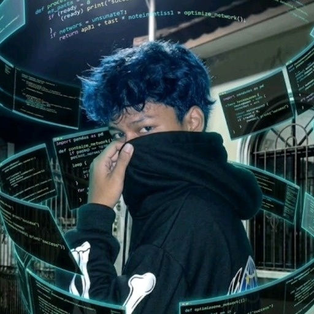

Penyedia produk & layanan digital, infrastruktur server Linux, panel Pterodactyl, nomor virtual OTP, serta solusi otomatisasi transaksi berbasis bot Telegram (@Sanzstrnokosmumerbot).

Founder / Owner (Sanz)
snz.web.id
Pelanggan melihat daftar layanan, spesifikasi, dan stok via kanal resmi atau bot Telegram.
Pelanggan memilih jenis layanan (VPS/OTP/Produk Digital) dan menyampaikan kebutuhan ke admin/bot.
Admin memeriksa rincian pesanan, kesiapan server/nomor, dan memberikan instruksi pembayaran.
Pelanggan melakukan transfer sesuai nominal yang disepakati dan diverifikasi secara transparan.
Pesanan diproses langsung melalui sistem internal server Linux atau penyedia layanan terkait.
Hasil layanan diserahkan ke pelanggan (kredensial/kode OTP) disertai bantuan jika berkendala.
Mengenalkan layanan melalui media sosial dan komunitas online teknologi/gaming.
Menyajikan spesifikasi layanan dan panduan pemesanan tanpa klaim berlebihan.
Menjadikan bot (@Sanzstrnokosmumerbot) dan admin (@Sanzxgoku) sebagai pusat interaksi cepat.
Menetapkan harga rasional sesuai spesifikasi server tanpa perang harga merusak.
Admin merespon pesan, pertanyaan spesifikasi, dan pesanan secara cepat serta lugas.
Mendampingi pelanggan jika menemui kendala instalasi panel atau keterlambatan OTP.
Memberitahukan ketersediaan kapasitas server apa adanya demi menjaga kepuasan.
Pelayanan jujur dan tuntas menjadi fondasi repeat order tanpa manipulasi testimoni.
Infrastruktur dasar server untuk hosting layanan, menjalankan script, dan pengelolaan port.
Bahasa pemrograman dan runtime utama dalam membangun logika bot dan komunikasi API.
Protokol penghubung untuk interaksi chat bot @Sanzstrnokosmumerbot, menu tombol, & notifikasi.
Sistem panel web berbasis Docker untuk kemudahan kontrol server game dan bot.
Manajemen domain snz.web.id, proteksi serangan DDoS, dan routing subdomain.
Sinkronisasi stok dan eksekusi nomor OTP secara otomatis via REST API.
Perencanaan sistem verifikasi pembayaran QRIS instan untuk bot Telegram.
Riset terpisah website layanan OTP berbasis Next.js, React, Tailwind CSS, & Supabase.
Efisiensi operasional admin, kecepatan transaksi detik, dan skalabilitas sistem.
Memperluas katalog produk digital, menambah varian spesifikasi VPS, dan adaptasi tren pasar.
Menjaga kestabilan uptime server, kecepatan delivery pesanan, dan evaluasi kepuasan berkala.
Menyelesaikan integrasi pemesanan mandiri, verifikasi QRIS otomatis, dan penyerahan kredensial langsung.
Menerapkan pencatatan transaksi terstruktur untuk memantau performa layanan dan arus keuangan rapi.
Memperkuat proteksi firewall server Linux, manajemen API key yang aman, serta backup rutin.
Mengintegrasikan website (snz.web.id), bot Telegram, dan panel server menjadi satu ekosistem stabil.
SANZ GOKU merupakan usaha digital yang berfokus pada produk dan layanan teknologi. Melalui pengembangan layanan server, produk digital, dan otomatisasi menggunakan bot Telegram (@Sanzstrnokosmumerbot), bisnis ini diarahkan untuk memberikan pelayanan yang praktis, transparan, dan terus berkembang sesuai kebutuhan pelanggan.